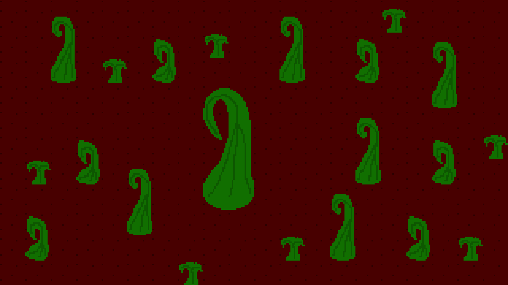
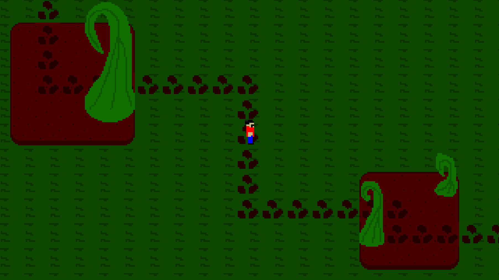
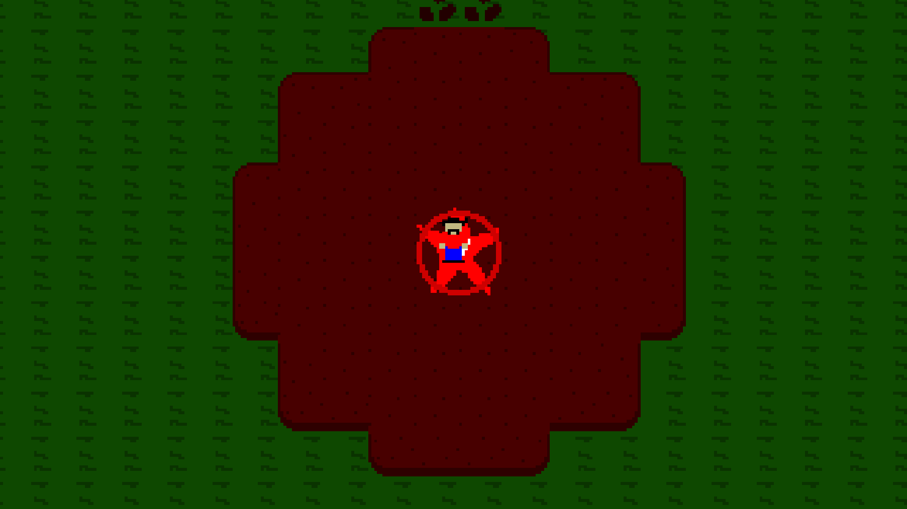

Well this is crazy, an update a week after the game comes out. The video presentation is in the trailers page, however, if you prefer this article version, here you are.
There is now the ability to refund your farming perks for the materials you spent. However, for upgrades that require multiple purchases to get to the max, you will only get the materials back for one purchase, and the level will still be set to 0. This should, in theory, allow players to mix match their perks a little more if they commit to something they don't like.
Much like the Heat Saving Mercenary, the Wizard now appears to offer lore in every area. This way, some more understanding can be given to what exactly is this cosmic battle.
You can download from this very page some custom files!
Have fun.
The Mesa is playable. I don't want to spoil much, but there's an Ancient Module, and something else, that set the stage for the next area...
The Next Update, 1.2.0
I'm currently experimenting with the tileset and designing the enemies of the next area, the Mucklands. Here's how it might look right now.

Some plants that I would like to try to use.

Islands to go around, possible enemy locations

????????????????????????????????????????????
I'm not very happy with the water currently, and some assets may not even be used, but we'll see what happens. This update will also feature a few new additions, but the focus this time is almost entirely on the Mucklands because it's a huge area.
There is also a bug fix ready to go, update 1.1.1, which will go out shortly after the update on Friday. It also has, very importantly, a huge change. Enemies will now, probably, have the same collision and rendering as the player, however this is still highly experimental.
The update is out on Friday. Please enjoy!